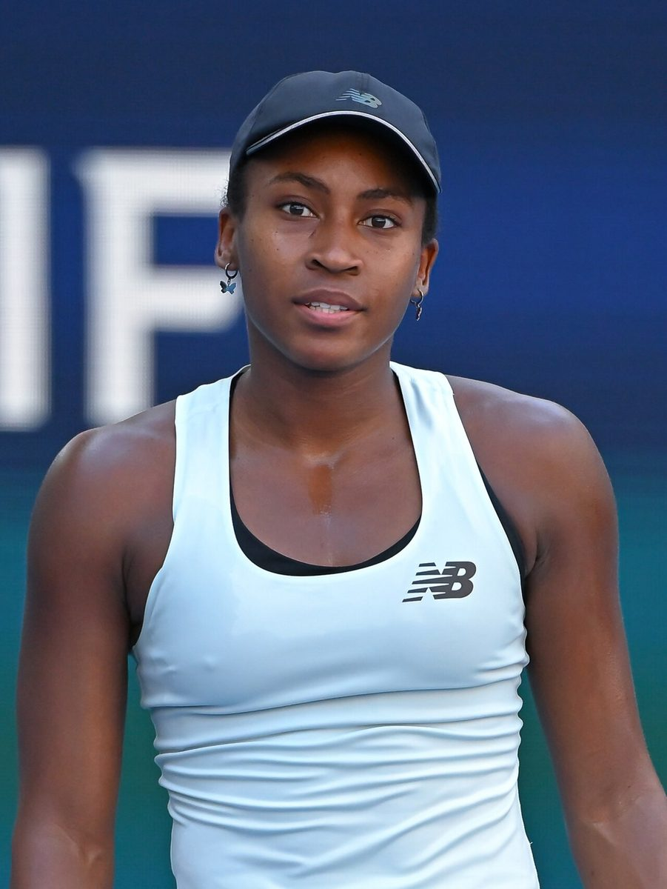

WTA Silences Practice Court Audio After Pegula Hot-Mic Controversy
Tour chair Valerie Camillo issues apology to world No. 5 following unintended livestream of remarks about Mirra Andreeva

Microphones on practice courts at the season-ending WTA Finals in Indian Wells have been muted after candid remarks by Jessica Pegula were broadcast across a live internet feed, prompting an official apology from the governing body on Friday.
The incident unfolded ahead of the tournament when a YouTube livestream captured an unmonitored conversation between Pegula and her coach, Mark Knowles. During the session, the American world No. 5 was heard calling Russian teenager Mirra Andreeva "a diva," suggesting the French Open champion needed to be humbled, and questioning the guidance of Andreeva's coach, Conchita Martinez.
Following swift backlash online, WTA chair Valerie Camillo acknowledged that tournament organizers had erred by keeping live audio active without alerting the athletes.

Apology and Immediate Policy Shift
Camillo took full responsibility on behalf of the tour, admitting that players had received neither prior warning nor visible notices indicating that training sessions were wired for sound. In an official statement, Camillo extended an apology to both Pegula and Knowles, labeling the broadcast an unacceptable disruption and emphasizing that protecting tour members remains a core duty.
Organizers immediately cut live audio from practice courts for the duration of the tournament, leaving only the visual feed operational for viewers tracking player warm-ups.
Rising Tension Between Access and Privacy

The controversy underscores long-standing unease among professional tennis players over how far broadcast cameras and directional microphones reach behind the scenes. Broadcasters have increasingly sought unfiltered, all-access content to engage younger digital audiences, but athletes have repeatedly argued that the encroachment compromises their working environment.
Pegula said she had been completely unaware of any active recording equipment. While acknowledging that behind-the-scenes glimpses appeal to spectators, the 32-year-old voiced frustration with excessive surveillance and expressed hope that the mishap would encourage tournament organizers to respect athlete boundaries.
The debate has simmered throughout the season. In January, Coco Gauff raised similar objections when television feeds lingered on her venting frustration and breaking a racket in an off-court tunnel following a quarter-final loss at the Australian Open.
Spotlight Turns to Indian Wells Action
The off-court friction arrives just as the elite eight-player field prepares to contest the tour's flagship championship from November 8 to 15. Pegula is drawn into a demanding group that features world No. 1 Elena Rybakina, Gauff, and Linda Noskova.
Whether Andreeva addresses the comments publicly remains to be seen, but the broadcast slip ensures an extra layer of tension in California before a single match point is played.